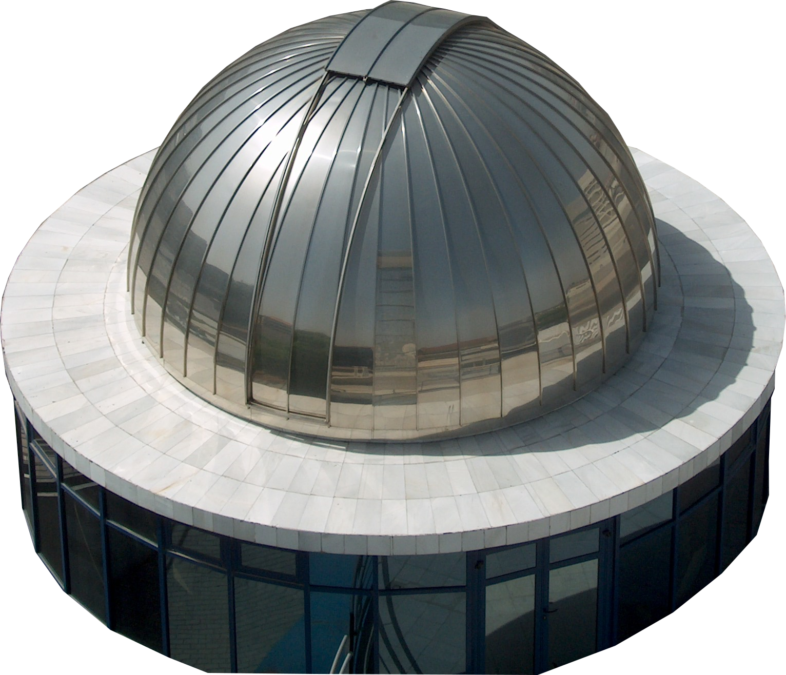

Imágen editadas
- Paso 1:
-
Vamos a hacer una selección. Para ello contamos con varias herramientas, aunque nosotros elegimos el
lazo.
Pulsaremos con doble clik sobre el icono para que se muestren las opciones de la herramienta.
La primera opción hace que cada selección que hagamos sustituya a la anterior.
Esto no nos conviene ya que la imagen es muy grande y el pulso no tan bueno, así que haremos la
selección a trozos.
Deberemos seleccionar el segundo icono, que nos permitirá ir añadiendo la nueva selección a la que
ya tenemos.
Si en algún momento nos pasamos, podemos deshacer (editar -> deshacer) o bien pulsar sobre el tercer
icono que restará la nueva selección que hagamos a la que teníamos.
- Paso 2:
-
Cuando ya hayamos terminado la selección vamos a copiar y pegar ( editar -> copiar y a continuación
editar -> pegar).
Al pegar algo sobre la imagen se crea temporalmente una capa sobre la imagen con
lo que hemos pegado.
Quizá no nos demos cuenta ya que la capa nueva está exactamente sobre la
selección que hicimos.
Para ver la capa con la selección flotante abriremos una ventana de diálogo con las capas (Diálogos
-> Capas).
Veremos que en la ventanita tenemos el fondo con el observatorio y una capa llamada selección
flotante;
pulsaremos con el botón derecho del ratón sobre esa capa y del menú desplegable
seleccionaremos capa nueva.
Con esta cacción conseguiremos que el observatorio que habíamos pegado
ahora sea una capa independiente.
- Paso 3:
-
En el diálogo de capas seleccionamos el fondo, la capa donde tenemos la imagen completa, y pulsamos sobre el icono con el cubo de basura.
Ahora ya tenemos visible el observatorio y transparente el resto de la imagen, pero la imagen es demasiado grande,
así que seleccionaremos Imagen -> ajustar lienzo a las capas para que el tamaño del lienzo se reduzca al tamaño de la capa que contiene el observatorio.
- Paso 4:
-
Por último ya sólo nos queda guardar la imagen.
Imágen editada del observatorio
Imágen original

Imágen editada
